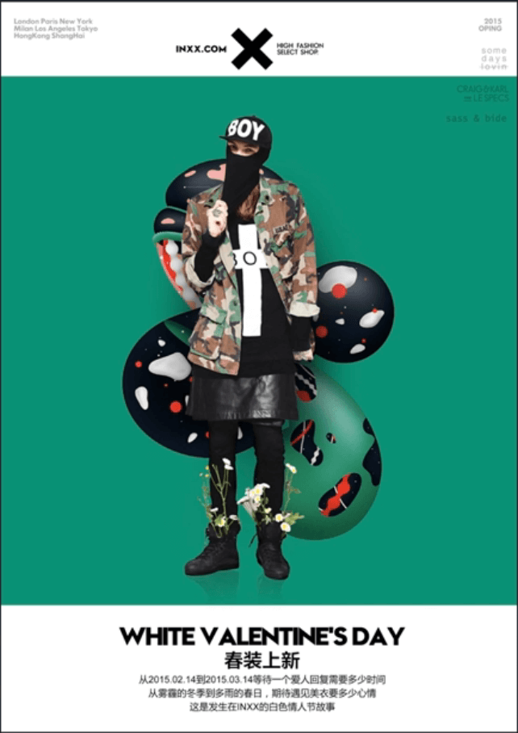
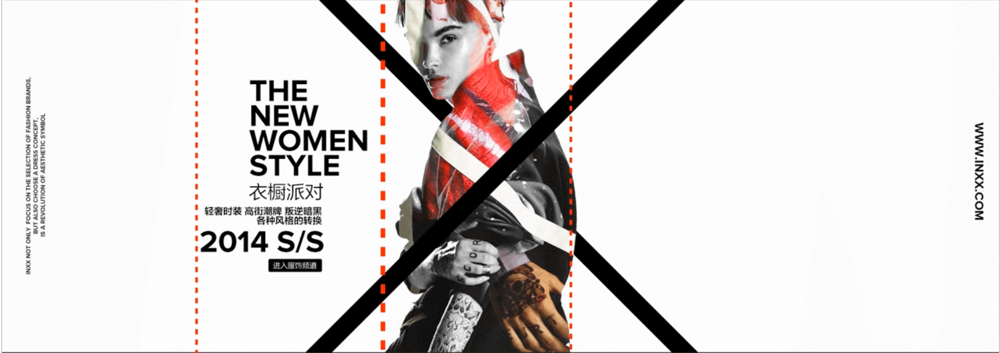
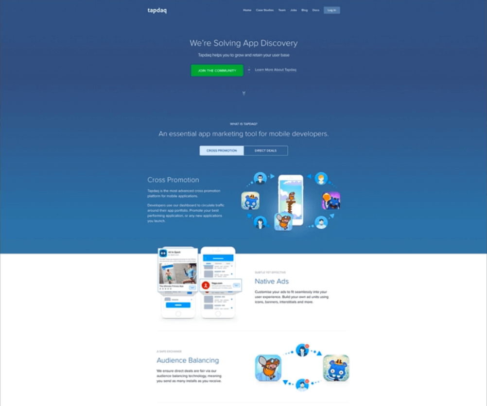
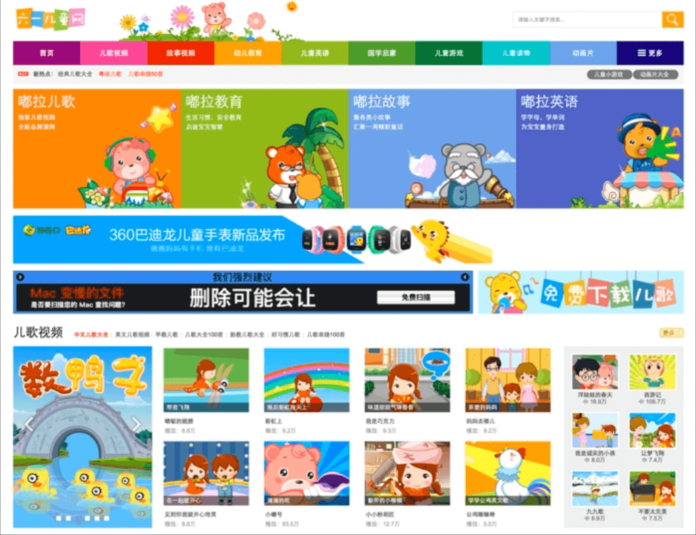
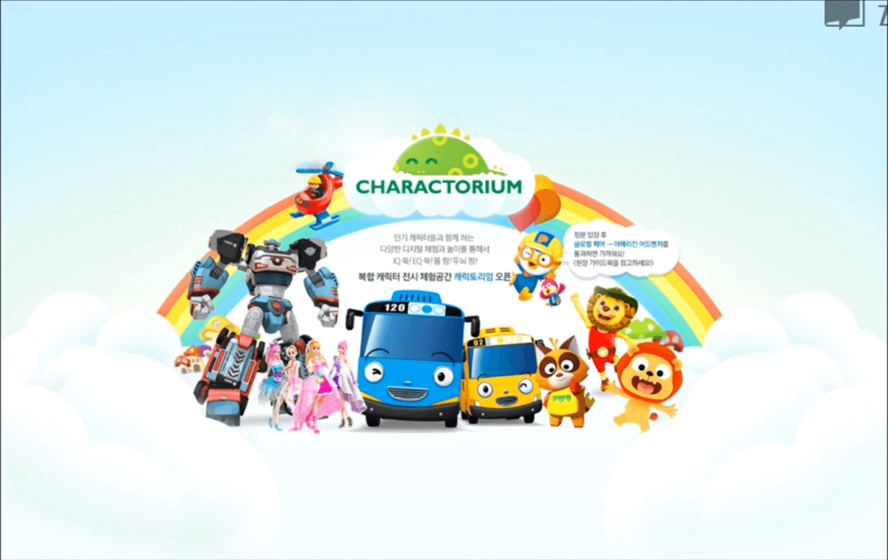
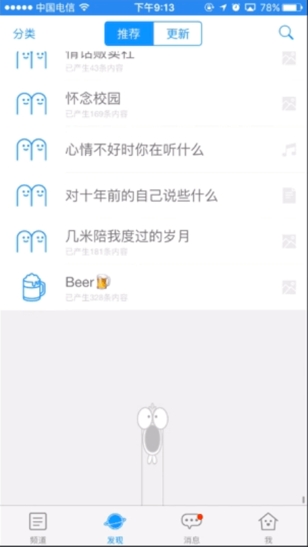
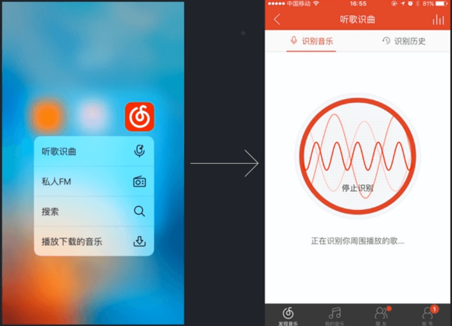

卓越篇：引爆设计中的惊喜
要做出卓越的产品体验，可以从视觉、交互、需求三个方面来卓越产品的三个方向
- 视觉层：以创意来冲击用户的感官
- 交互层：超出一般的高效和友好操作
- 需求层：满足用户想象不到的使用场景
视觉层设计
视觉层的设计主要还是需要自己有丰富的设计经验，能够驾驭各种类型的设计风格。下面姜葱时尚、文艺、商务、可爱四个方面来进行作品赏析，希望以此能提高对于美得鉴赏。
时尚
反面例子
这个以时尚为题的网站却用一个大红色banner背景，显得很俗。
正面例子
整体版式分为上中下三个区块，非常简洁。顶部和底部留白与中间的绿色形成强烈对比，有一定冲击感。中间的色彩都是从模特的身上提取出来，显得整体比较统一。为了让背景不那么空，在模特后面加了四个拉向四边的区块，形成一种张力，让人的视线从模特身上转移到整张图上。

主图和主文字刚好处在黄金分割线上，这样可以让版面更生动，形成韵律感。

下面图片右下角的文字只是用来做修饰的，借以衬托出主题文字的精致，这种设计手法在很多高水平的设计中经常出现。
下面的文字如果没有左下角文字的修饰，就会显得很粗糙，但是有了它之后，就会显得很精致。
设计实践：用无意义的文字来衬托主题问题是一个很好的修饰手法。
下面的图片远看背景是黑色的，但仔细看却有很多细节。
设计实践：善用肌理来设置背景使得细节背景更有层次和可看性。
文艺
反面例子
下图的文字加上了描边，显得很low；英文单词第一个字母被断开，影响阅读。
正面例子
设计实践：
- 设计元素的属性要匹配
- 排版符合一般美感规律
商务
反面例子
顶部用了非常浓艳的红色，会给人一种土土的感觉（可能是为了和LOGO的品牌色配合吧，不过用的地方太过于抢眼）。
设计实践：当两个有冲突的颜色要搭配在一起的话，可以加上一个过渡色来避免冲突。下图淘宝的橙色和蓝色中间有一层白色的过渡色，视觉上的冲突会淡化一些。
正面例子
商务风格给人一种成熟可靠的感觉就可以了。


可爱
反面例子
色彩太过炫丽，没有视觉流可言

正面例子
下面这张图片80%是粉红色，其余是辅助色，主题鲜明



交互篇
在交互设计上要让用户觉得很精细可以从转场、情感化、效率三个方面来入手。
转场设计
一般的APP从一个页面跳转到另一个页面只是单纯的跳转，没有更多的细节，如果加上了更多的跳转动画，那么会给用户更好的用户体验。在设计转场的时候需要注意以下几点：
- 只在最常用的地方加动效
- 不增加用户操作时间
因为如果转场效果过多一方面会增加开发成本，一方面也会给用户带来一种拖沓复杂的感觉。
情感化
一些页面设计虽然能完成指定的产品功能，但是其与用户没有感情上的互动，如果能在情感上与用户有互动，那么一定会给用户惊喜。例如下面产品的支付成功页虽然设计美观简洁，但是没有什么情感化的元素在里面。
而下面这个登录页面当你输入密码的时候，小动物会捂住自己的眼睛，增加了趣味性，这个就是情感化的设计。
这里下拉刷新的转场动效也设计得很情感化

效率
当原本需要数次点击才能完成的操作，如果能在用户只需一次点击便完成，那么用户也会感觉到惊喜。那么如果提高效率呢？
提高效率就是要找出高频操作，缩小他们的使用路径。
网易云音乐的听歌识曲功能，因为一般时间都很紧迫，需要快点识别出歌曲，所以这里给它在3D Touch里做了一个快捷入口。

在微信支付里直接输入密码就可以支付，而支付宝则需要再次点击确认才能支付，这里微信就将点击确认按钮这个操作简化了，提高了效率。